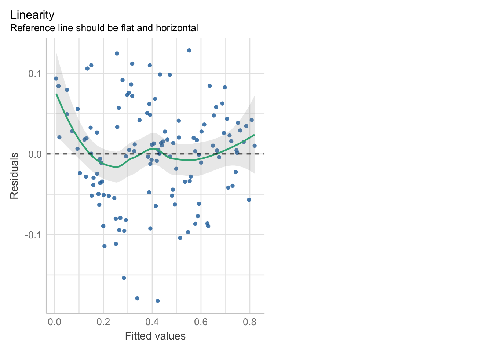
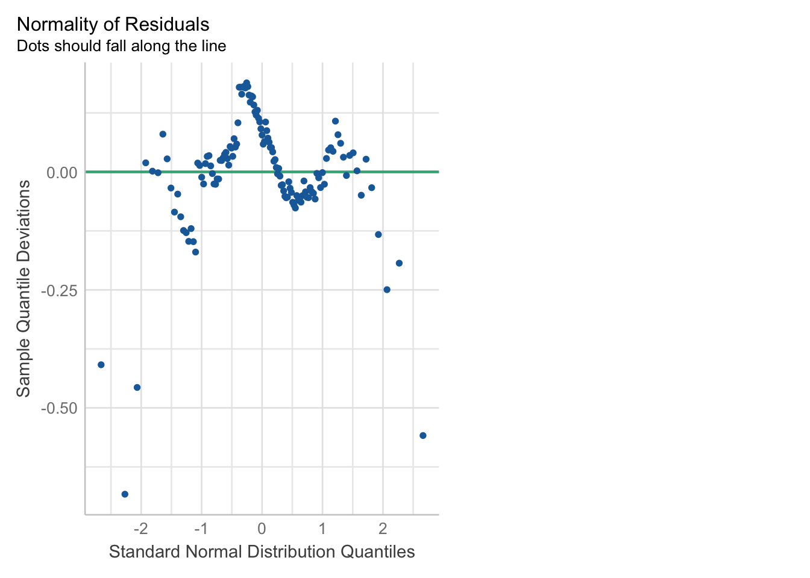
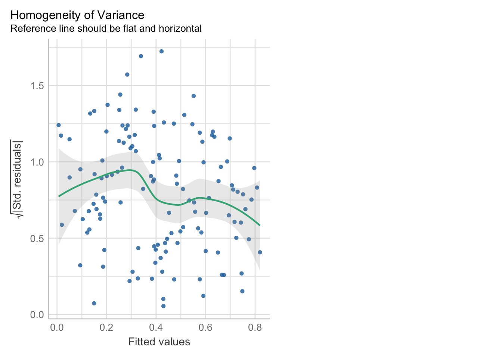

Sesión 2

Recordando la regresión lineal
El E-Government Development Index (EGDI) o Índice de Desarrollo de Gobierno Electrónico es un indicador que mide el nivel de desarrollo de los servicios gubernamentales en línea y la capacidad de los gobiernos para utilizar las tecnologías de la información y la comunicación (TIC) para proporcionar servicios públicos eficientes y efectivos. Fue desarrollado por la División de Administración Pública y Desarrollo de la ONU en colaboración con la Universidad de las Naciones Unidas.
El EGDI se compone de tres dimensiones:
Acceso a las tecnologías de la información y la comunicación (TIC),
Disponibilidad de servicios gubernamentales en línea
Grado de capacitación y compromiso del gobierno con el desarrollo de servicios en línea.
El índice se mide en una escala de 0 a 1, donde 1 representa el nivel más alto de desarrollo del gobierno electrónico.
El EGDI es utilizado por los gobiernos, las organizaciones internacionales y la sociedad civil para evaluar el progreso en el desarrollo del gobierno electrónico y para identificar las áreas en las que se deben hacer mejoras para proporcionar servicios públicos más eficientes y efectivos en línea.
Para mayor información: https://publicadministration.un.org/egovkb/en-us/About/Overview/-E-Government-Development-Index
Con fines prácticos el día de hoy se trabajará con la data del EGDI (escala 0 a 1) y con las variables ProcesoElectoral, Policulture y UsuariosInternet, las cuales provienen de otros estudios.
Diccionario de datos de EGov.xlsx
Cargar librerías pd2_performance.png
library(rio)
library(dplyr)
library(ggfortify)
library(see)
library(patchwork)
library(performance)
library(nortest)
library(lmtest)
library(car)librería de check_model
Importamos la base de datos üòº:
## [1] "pais" "participaciónDigital"
## [3] "Servicios_Online" "Capital_Humano"
## [5] "Telecommunicacion_Infrastructura" "ProcesoElectoral"
## [7] "Policulture" "accesoInformacion"
## [9] "UsuariosInternet"Ejemplo 1: Regresión lineal simple
Calcularemos un modelo para predecir el acceso a la información a partir de participación digital.
Variable dependiente: accesoInformacion
Variable independiente: participaciónDigital
##
## Call:
## lm(formula = accesoInformacion ~ participaciónDigital, data = Egov)
##
## Residuals:
## Min 1Q Median 3Q Max
## -0.299518 -0.097558 0.009702 0.082185 0.311334
##
## Coefficients:
## Estimate Std. Error t value Pr(>|t|)
## (Intercept) 0.08298 0.02620 3.167 0.00193 **
## participaciónDigital 0.64398 0.04554 14.141 < 2e-16 ***
## ---
## Signif. codes: 0 '***' 0.001 '**' 0.01 '*' 0.05 '.' 0.1 ' ' 1
##
## Residual standard error: 0.1385 on 127 degrees of freedom
## Multiple R-squared: 0.6116, Adjusted R-squared: 0.6085
## F-statistic: 200 on 1 and 127 DF, p-value: < 2.2e-16Algunos detalles:
Estimacion (Estimate): Este valor nos dice cuánto esperamos que cambiará el acceso a la información. Por ejemplo, si cambiamos la participación digital un poquito, él modelo te dirá cuánto crees que cambiará el acceso a la información.
(Intercept) Es el valor que esperamos de Y cuando x1 y x2 sean cero
los coeficientes de x1, en este caso participaciondigital, nos indican respectivamente por cada unidad que aumenta la variable X, en cuanto se esperaria que aumente (o disminuya) la variable Y, controlando las demas variables.
Error Estándar (Std. Error): El modelo puede cometer pequeños errores. El “Error Estándar” nos dice cuánto podría equivocarse en su estimación. Si el error estándar es pequeño, significa que el modelo es más certero
Valor t (t value): El valor t es como una medida que determina si el modelo es confiable.
Valor p (Pr(>|t|)): El p-value nos dice si los resultado serán significativos
El R-squared nos dice el porcentaje de la varianza de Y que es explicada por el modelo
Seguimos nuestro flujograma para evaluar el modelo:
- Nos preguntamos si el modelo es válido ü§î
- Si el p-value es menor a 0.05 significa que rechazamos la hipótesis nula, lo cual probaría que nuestro modelo sí funciona.
- ¿Qué tanto explica el modelo?
- Revisamos el R cuadrado ajustado que va de 0 a 1 (0% a 100%)
- Si la variable independiente aporta al modelo
- Nos enfocamos en el p-value de cada independiente
- Identificamos los coeficientes
- En este caso hacemos uso del código modelo1$coefficients.
¿Qu√© sucede si agregamos más variables? üëæ

Tehc is a meme man character which is similarly used for tasks for which one might feel disproportionately proud of doing, though Tehc is paired with technology
Ejemplo 2: Regresión lineal múltiple
Calculamos nuestro modelo, en este caso usaremos lo siguiente:
Variable dependiente: accesoInformacion
Variables independientes: Capital_Humano + Policulture + Telecommunicacion_Infrastructura + ProcesoElectoral
modelo1<- Egov %>% lm(accesoInformacion ~ Capital_Humano + Policulture + Telecommunicacion_Infrastructura + ProcesoElectoral,data=.)
summary(modelo1)##
## Call:
## lm(formula = accesoInformacion ~ Capital_Humano + Policulture +
## Telecommunicacion_Infrastructura + ProcesoElectoral, data = .)
##
## Residuals:
## Min 1Q Median 3Q Max
## -0.182241 -0.039405 0.004808 0.038477 0.128248
##
## Coefficients:
## Estimate Std. Error t value Pr(>|t|)
## (Intercept) -0.121109 0.026822 -4.515 1.45e-05 ***
## Capital_Humano 0.338730 0.051550 6.571 1.24e-09 ***
## Policulture 0.012707 0.004309 2.949 0.003809 **
## Telecommunicacion_Infrastructura 0.514122 0.047858 10.743 < 2e-16 ***
## ProcesoElectoral 0.007493 0.001912 3.919 0.000146 ***
## ---
## Signif. codes: 0 '***' 0.001 '**' 0.01 '*' 0.05 '.' 0.1 ' ' 1
##
## Residual standard error: 0.06309 on 124 degrees of freedom
## Multiple R-squared: 0.9213, Adjusted R-squared: 0.9188
## F-statistic: 363.1 on 4 and 124 DF, p-value: < 2.2e-16Seguimos nuestro flujograma para evaluar el modelo:
- Nos preguntamos si el modelo es válido:
- Si el p-value es menor a 0.05 significa que rechazamos la hipótesis nula, lo cual probaría que nuestro modelo sí funciona.
- Al tener un p-value de 2.2e-1-16 nuestro modelo sí funciona.
- ¿Qué tanto explica el modelo?
Revisamos el R cuadrado que va de 0 a 1 (0% a 100%)
En este caso mis variables (en conjunto) explican el 92.13% de la variabilidad de mi dependiente, esto es bueno, pero quizá podr√≠a ser mejor üòØ
- ¿Las variables independientes aportan al modelo?
Nos enfocamos en el p-value de cada independiente
corroboramos que estas rechacen la hipótesis nula, es decir que sean menores que 0.05.
Vemos que todas nuestras variables cumplen ✅
- Identificamos los coeficientes
- En este caso hacemos uso del código
modelo1$coefficients.
## (Intercept) Capital_Humano
## -0.121108754 0.338730284
## Policulture Telecommunicacion_Infrastructura
## 0.012707321 0.514122324
## ProcesoElectoral
## 0.007493087- Armamos nuestra ecuación: y=-0.121108754+ Capital_Humano(0.338730284)+….
SUPUESTOS
- Se analizan los residuos
- Las inferencias del modelo de regresión será confiable/correcta solamente si se cumplen todos los supuestos.
Creamos un gráfico a partir del modelo1 para ejemplificar los residuos üë©‚Äçüî¨
Egov %>%
ggplot(aes(x = participaciónDigital, y = accesoInformacion)) +
geom_point(aes(color = "Datos Originales"), size = 2) + #Datos originales
geom_smooth(method = "lm", aes(color = "Línea del Modelo"), se = FALSE) + #La línea de regresión
geom_segment(aes(xend = participaciónDigital, yend = fitted(modeloRL)), alpha = 0.2) + # Líneas de residuos
scale_color_manual(name = "", values = c("Datos Originales" = "skyblue", "Línea del Modelo" = "green")) +
labs(title = "Análisis de residuos de modelo1",
x = "Participación Digital", y = "Acceso a la Información") +
theme_minimal()♦️ Tabla resumen 1

♦️ Tabla resumen 2
1- Linealidad (el problema es la no linealidad)
Como su nombre lo dice, debe de existir una linealidad entre la variable independiente y dependiente, en otras palabras,la linealidad indica que el valor esperado de la variable dependiente es una función lineal de cada variable independiente, manteniendo las demás fijas. La pendiente de esa línea no depende de los valores de las otras variables, por ello también nos fijamos variable por variable. Los efectos de diferentes variables independientes sobre el valor esperado de la variable dependiente son aditivos. Si este supuesto no se cumple significaría que posiblemente existan variables que no aporten al modelo o que se trate de una relación no lineal [polinomial, logística, logaritmicos].
Cómo detectarlo
- Exploración gráfica: Plot de valores residuales frente a valores predichos.
La línea verde debería de estar lo más cercana a la línea punteada.

- Correlación:
cor.test
p-value menor a 0.05 rechazo la hipótesis nula: sí hay correlación entre las variables.
##
## Pearson's product-moment correlation
##
## data: Egov$accesoInformacion and Egov$Capital_Humano
## t = 22.047, df = 127, p-value < 2.2e-16
## alternative hypothesis: true correlation is not equal to 0
## 95 percent confidence interval:
## 0.8481015 0.9214524
## sample estimates:
## cor
## 0.8904218##
## Pearson's product-moment correlation
##
## data: Egov$accesoInformacion and Egov$Policulture
## t = 8.8381, df = 127, p-value = 6.817e-15
## alternative hypothesis: true correlation is not equal to 0
## 95 percent confidence interval:
## 0.4973051 0.7138223
## sample estimates:
## cor
## 0.6171117##
## Pearson's product-moment correlation
##
## data: Egov$accesoInformacion and Egov$Telecommunicacion_Infrastructura
## t = 28.644, df = 127, p-value < 2.2e-16
## alternative hypothesis: true correlation is not equal to 0
## 95 percent confidence interval:
## 0.9029585 0.9505284
## sample estimates:
## cor
## 0.9305693##
## Pearson's product-moment correlation
##
## data: Egov$accesoInformacion and Egov$ProcesoElectoral
## t = 8.0735, df = 127, p-value = 4.502e-13
## alternative hypothesis: true correlation is not equal to 0
## 95 percent confidence interval:
## 0.4553674 0.6861617
## sample estimates:
## cor
## 0.58238132. Normalidad de residuos (el problema es la NO normalidad)
Descripción
Identificar si los errores siguen una distribución normal. La resta del valor observado menos el valor pronosticado (residuos) siguen una distribución normal, esto es importante porque si es que no se cumple no se podrían aplicar las pruebas globales del modelo.
¿Cómo detectarlo?
- Exploración gráfica
Todos los puntos deberían estar sobre la diagonal color verde.

- Pruebas de normalidad a los residuos: Lilliefors (kolmogorov-Smirnov) [mayores a 50 casos] o Shapiro-Wilks [menores a 50 casos]
##
## Lilliefors (Kolmogorov-Smirnov) normality test
##
## data: modelo1$resid
## D = 0.077796, p-value = 0.05342Ojo con la hipótesis nula. H0: Es normal (distribución normal) | Ha: No es normal (no hay distribución normal)
Si el pvalor es menor a 0.05 entonces NO existe normalidad de residuos (problemas! ☠️), se rechazaría la distribución normal. Dado que nuestro p-value es 0.05342, mayor que 0.05, entonces sí estamos frente a un caso de distribución normal de los residuos.
3. Homocedasticidad (el problema es la heterocedasticidad)
Descripción
La homocedasticidad (también conocido como homogeneidad en la varianza de los residuos) indica que las variancias de los errores son constantes. Cuando no se cumple es un problema porque los estimadores no son consistentes ni eficientes y se presenta el caso de la heterocedasticidad.
Cómo detectarlo
- Exploración gráfica: diagrama de residuos standarizados y valores predichos.

En el Gráfico la línea verde debe seguir una tendencia horizontal, esto representaría que la distribución de los puntos son uniformes. Al ver nuestro gráfico nos damos cuenta que la línea verde va hacia arriba, lo cual nos dice que el gráfico no es concluyente aún.
- Test Breusch Pagan: También llamado como el Score Test for Non-Constant Error Variance. Evalúa si la varianza del error cambia con el nivel de la variable respuesta (valores ajustados) o con una combinación lineal de predictores.
##
## studentized Breusch-Pagan test
##
## data: modelo1
## BP = 4.1001, df = 4, p-value = 0.3926- H0: El modelo es homocedástico
- Ha: El modelo es heterocedástico
Si el pvalor es menor a 0.05 entonces el modelo es heterocedástico (problema! ☠️ ). Esta vez estamos frente a un modelo homocedástico
4. Ausencia de multicolinealidad (el problema es la presencia de multicolinealidad)
Descripción
Se aplica en la regresión lineal MÚLTIPLE. Significa que las variables explicativas están relacionadas linealmente entre sí. La multicolinealidad hace que los coeficientes del modelo se vuelvan inestables, es decir, oscilarán violentamente ante cambios mínimos en las variables de insumo. Esto entendería que existe una relación fuerte entre variables independientes, por lo tanto podría darnos un modelo inestable.
Cómo detectarlo
- Con el Factor de Inflación de Varianza (VIF). los factores de inflación de varianza deben de ser menores de 5. De acuerdo a nuestros resultados no encontramos multicolinealidad.
- Mayor a 10, grave problema de multicolinealidad.
Código

5.Apalancamiento
Descripción
El indicador de apalancamiento muestra que tanta influencia o “palanca” pueden tener los residuos en la recta de regresión. El problema se da cuando hay puntos con mucha influencia o “leverage”, ya que al afectar la línea de predicción genera que nuestro modelo sea menos confiable.
Cómo detectarlo
- Gráfico: Se espera que la línea verde tenga un comportamiento horizontal. Observamos si hay casos que están afuera de la línea punteada verde.

6.- Independencia de residuos (el problema es que existe autocorrelaci√≥n en los residuos) üö®
Descripción Si los residuos no tienen una distribución normal (supuesto de normalidad), es probable que estos no sean independientes entre sí. Si no se cumple con este supuesto implica que el modelo tiene sesgo en su predicción debido a los patrones de error que existen.
Cómo detectarlo Previo a aplicación de la prueba
Durbin-Watson debemos establecer una muestra para aplicarla. Esto debido
a que de no hacerlo, y al seleccionar una muestra aleatoria cada vez, el
resultado no será el mismo siempre. Podemos lograr eso con
set.seed del paquete car.
La hipótesis nula de esta prueba es que no hay dependencia de residuos; por lo que para aprobar el supuesto necesitamos que el pvalue supere el 0.05.
- Test de Durbin Watson
## lag Autocorrelation D-W Statistic p-value
## 1 0.09614045 1.805361 0.262
## Alternative hypothesis: rho != 0el p-value de durbinWatsonTest es 0.262 Al ser
mayor a 0.05, entonces podemos afirmar que los residuos son
independientes o que no están autocrrelacionados. El modelo
sí pasa este supuesto.
Modelo 2: ¿Es posible mejorar mi modelo1?
Realizamos una nueva regresión.
## [1] "pais" "participaciónDigital"
## [3] "Servicios_Online" "Capital_Humano"
## [5] "Telecommunicacion_Infrastructura" "ProcesoElectoral"
## [7] "Policulture" "accesoInformacion"
## [9] "UsuariosInternet"modelo2 <- Egov %>% lm(accesoInformacion ~ ProcesoElectoral + Capital_Humano + UsuariosInternet,data=.)
summary(modelo2)##
## Call:
## lm(formula = accesoInformacion ~ ProcesoElectoral + Capital_Humano +
## UsuariosInternet, data = .)
##
## Residuals:
## Min 1Q Median 3Q Max
## -0.254952 -0.035623 -0.003694 0.047606 0.161338
##
## Coefficients:
## Estimate Std. Error t value Pr(>|t|)
## (Intercept) -0.0957974 0.0235530 -4.067 8.36e-05 ***
## ProcesoElectoral 0.0110506 0.0020500 5.391 3.37e-07 ***
## Capital_Humano 0.3569299 0.0612435 5.828 4.48e-08 ***
## UsuariosInternet 0.0042164 0.0004453 9.469 2.29e-16 ***
## ---
## Signif. codes: 0 '***' 0.001 '**' 0.01 '*' 0.05 '.' 0.1 ' ' 1
##
## Residual standard error: 0.07144 on 125 degrees of freedom
## Multiple R-squared: 0.8983, Adjusted R-squared: 0.8959
## F-statistic: 368.1 on 3 and 125 DF, p-value: < 2.2e-16Seguimos nuestro flujograma para evaluar el modelo:
- Nos preguntamos si el modelo es válido:
- Si el p-value es menor a 0.05 significa que rechazamos la hipótesis nula, lo cual probaría que nuestro modelo sí funciona. -Al tener un p-value de 2.2e-16 nuestro modelo sí funciona.
- ¿Qué tanto explica el modelo? -Revisamos el R cuadrado que va de 0 a 1 (0% a 100%) -En este caso mis variables (en conjunto) explican el 89.8% de la variabilidad de mi dependiente, esto es bueno, pero quizá podría ser mejor.
- ¿Las variables independientes aportan al modelo? -Nos enfocamos en el p-value de cada independiente -corroboramos que estas rechacen la hipótesis nula, es decir que sean menores que 0.05.
Conclusiones preliminares: el modelo sí pasa la evaluación; mis variables siguen aportando al modelo, mi modelo es válido al tener un p value de 2.2e-16; sin embargo, nos damos cuenta que mi modelo2 explica menos que mi modelo1. Por lo tanto, solo al evaluar mi modelo2, a pesar de que es un modelo válido, optaría por mantener mi modelo1. Ojo, solo basándome en esta primera evaluación del modelo. Una decisión más fina sería al realizar mis pruebas de supuestos completa.